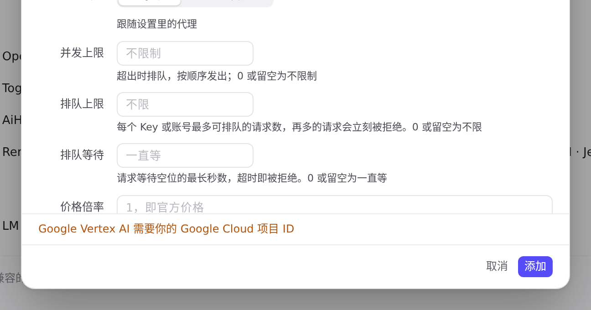
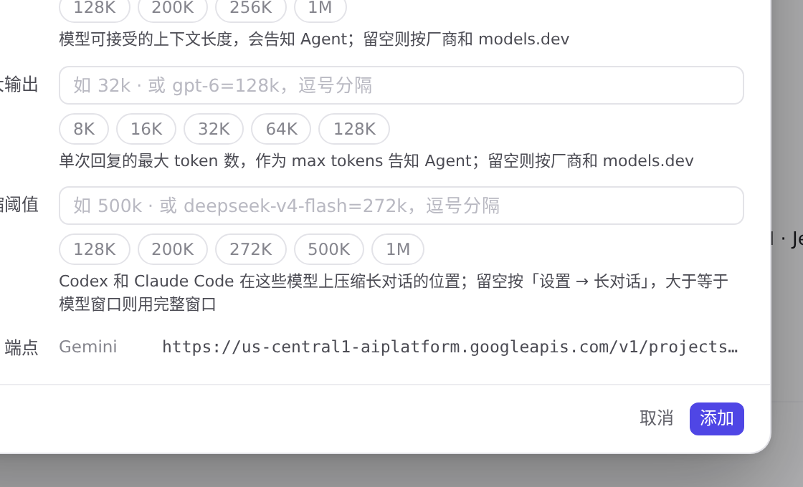
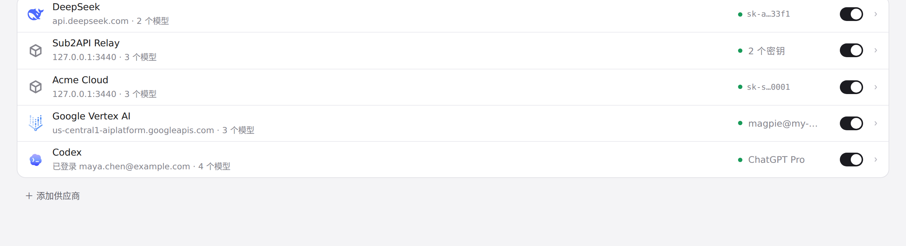
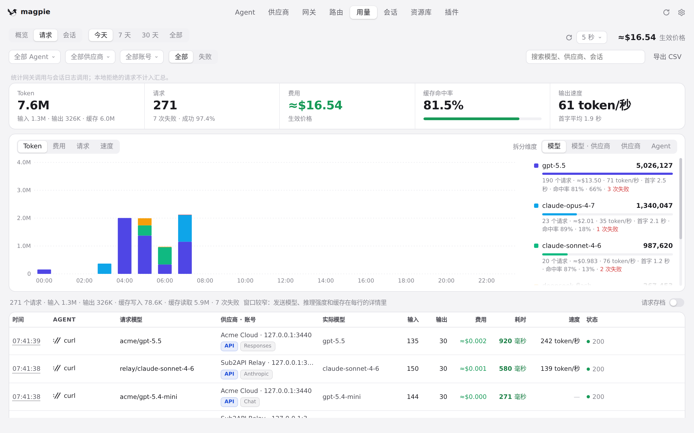

#1122 界面预览
commit 570f1fb · 回到 PR · 「添加供应商」里新增 Google Vertex AI 预设：它的编辑器用项目 ID、位置、凭据文件和服务账号取代 API 密钥，端点栏按项目与位置显示地址，供应商行用 pill 说明由哪份 Google 凭据签名；「用量 → 请求」把 Gemini 的 streamGenerateContent 也判为 Gemini。
红线是鼠标走过的轨迹，红色圆环是一次点击；底部文字是这一步在做什么。空格暂停，← → 逐段查看。
 添加 Google Vertex AI：用项目代替密钥 · 预设列表里的 Google Vertex AI
添加 Google Vertex AI：用项目代替密钥 · 预设列表里的 Google Vertex AI
 添加 Google Vertex AI：用项目代替密钥 · 编辑器：项目 ID、位置、凭据文件、服务账号取代了 API 密钥
添加 Google Vertex AI：用项目代替密钥 · 编辑器：项目 ID、位置、凭据文件、服务账号取代了 API 密钥

添加 Google Vertex AI：用项目代替密钥 · 保存被拒时的提示
 添加 Google Vertex AI：用项目代替密钥 · 填入项目后出现的端点地址
添加 Google Vertex AI：用项目代替密钥 · 填入项目后出现的端点地址

添加 Google Vertex AI：用项目代替密钥 · 端点地址随位置变化

添加 Google Vertex AI：用项目代替密钥 · 供应商列表里的这一行，pill 说明用哪份 Google 凭据签名

用量 → 请求：Gemini 的流式请求 · 请求列表里 Gemini 的 streamGenerateContent 请求带的标签